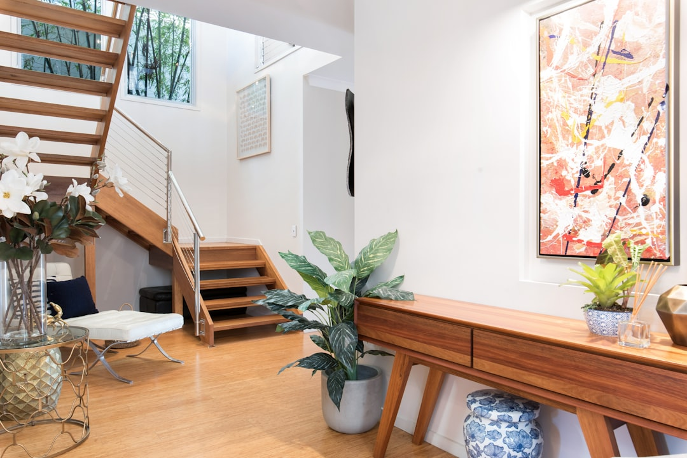
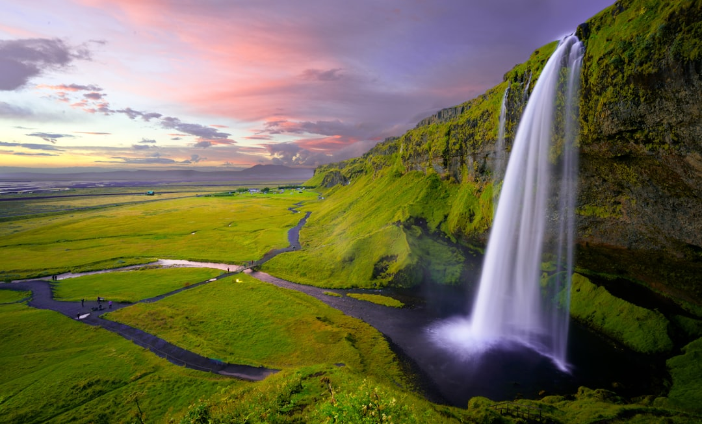
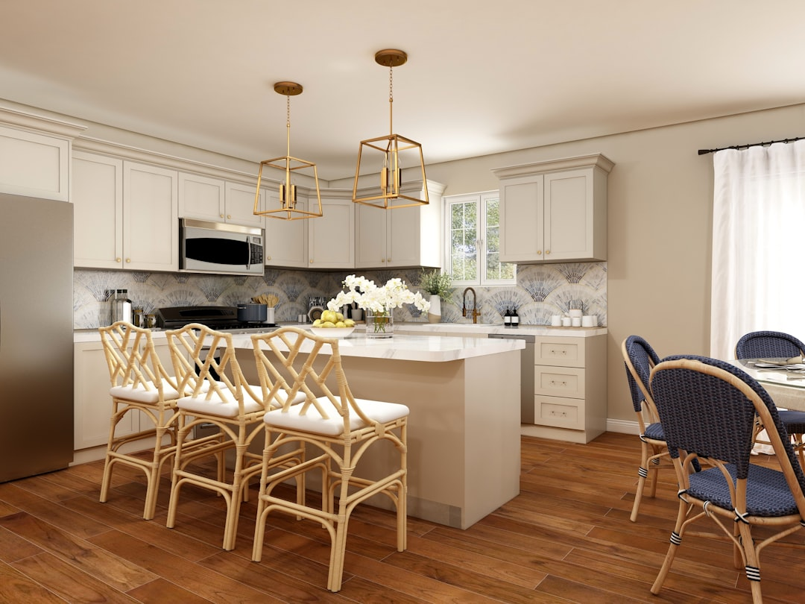
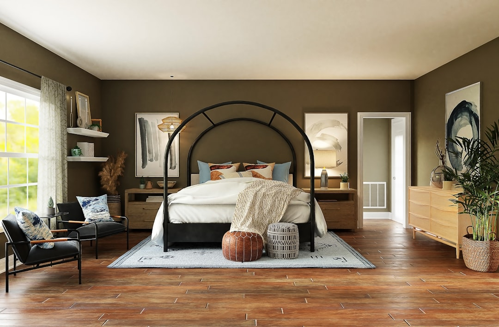
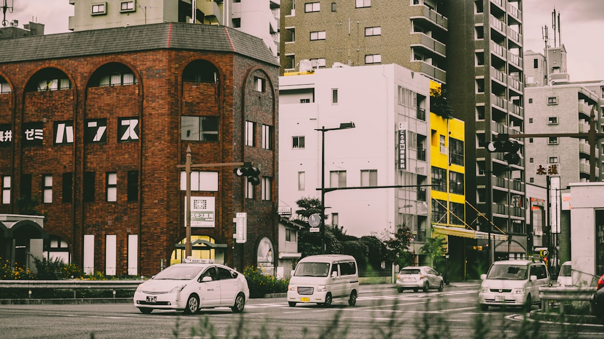
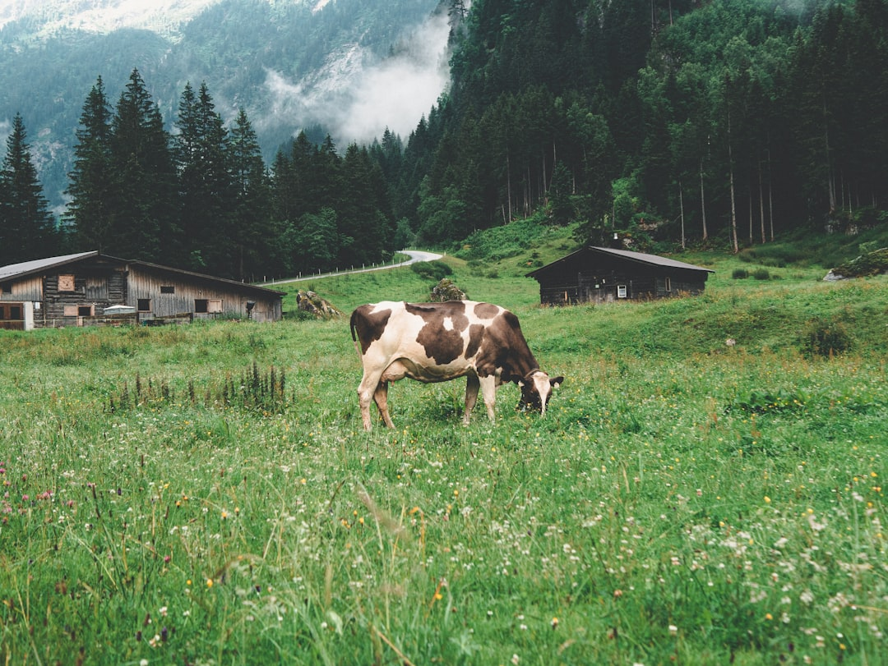
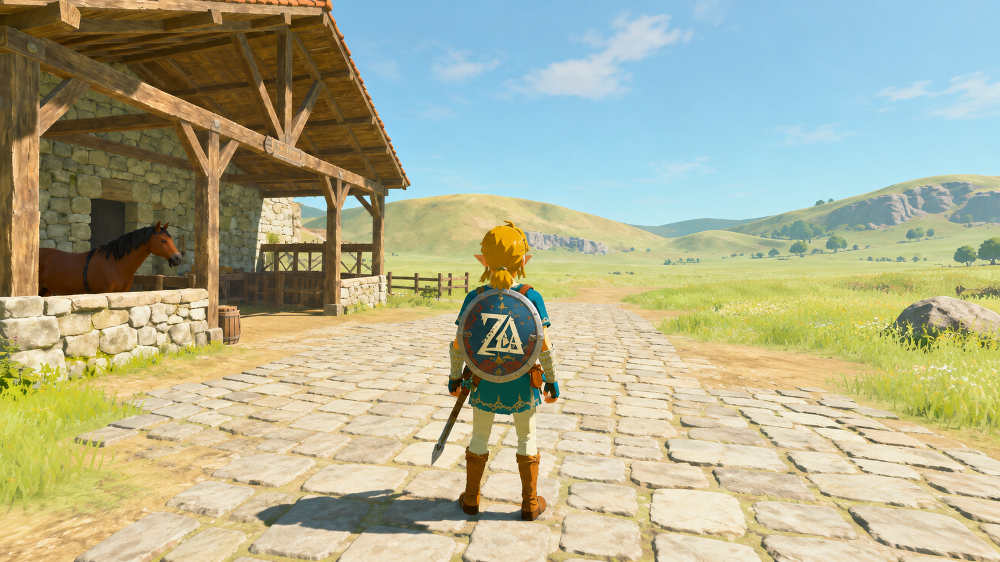
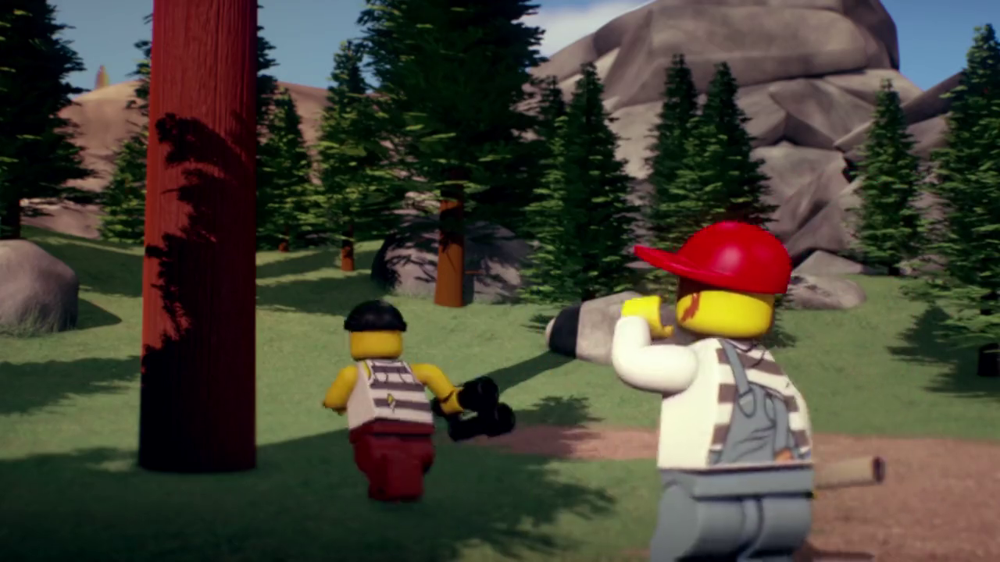
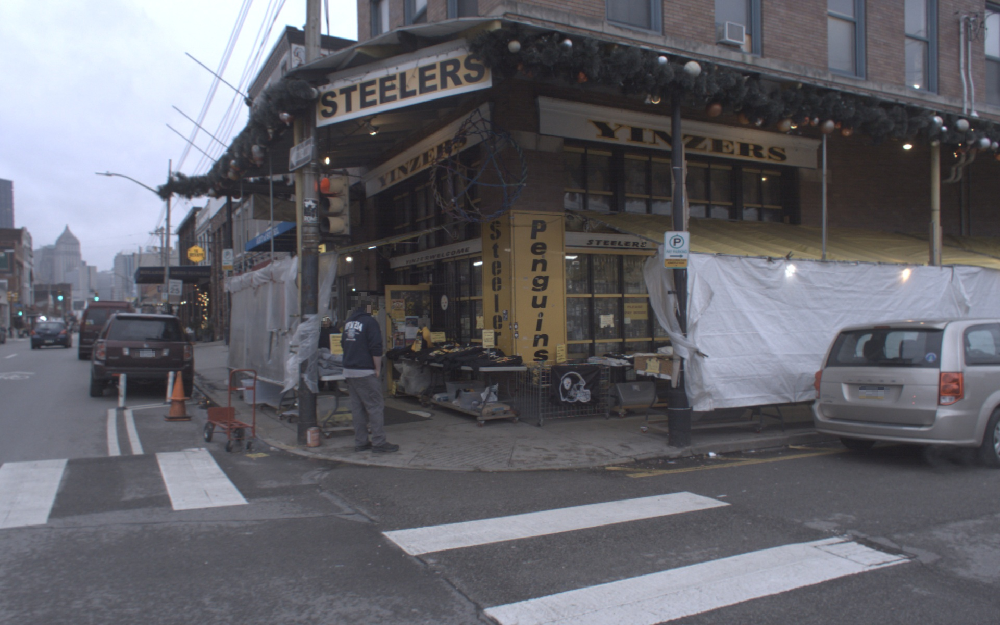
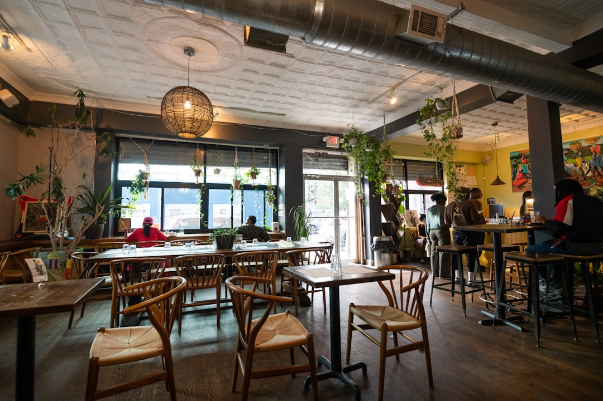

INPUT IMAGE

PROMPT
Sunlight brightens a living room with an elegant staircase, wooden console, artwork, and plants.
ACTION INPUT
No input
Recorded inputs · Click a key to jump.
GENERATED VIDEO
FACTORIZED MEMORY FOR VIDEO WORLD MODELS
1 East China Normal University · 2 Fudan University · 3 Beihang University · 4 Shanghai Artificial Intelligence Laboratory · 5 The Chinese University of Hong Kong
Remember the scene as the camera explores and returns. Ground evolving entities in recent observations—without additional training.
Keep familiar layouts and fine scene details consistent, from bright interiors to open landscapes.

Sunlight brightens a living room with an elegant staircase, wooden console, artwork, and plants.
No input
Recorded inputs · Click a key to jump.

A majestic waterfall descends over lush cliffs beneath a colorful sky.
No input
Recorded inputs · Click a key to jump.

Warm sunlight illuminates a modern kitchen island and elegant pendant lights.
No input
Recorded inputs · Click a key to jump.

In the Cozy Bedroom Retreat, the inviting bed with soft pillows and adjacent chairs create a warm and stylish atmosphere.
No input
Recorded inputs · Click a key to jump.

The cars move forward along the urban street, smoothly navigating through the intersection. They maintain a steady speed, aligning with traffic signals and merging seamlessly with other vehicles.
No input
Recorded inputs · Click a key to jump.
Retain subjects’ visual identity while their motion and state continue to evolve across revisits.

A cow moves through a meadow, pausing to lower its head and graze.
No input
Recorded inputs · Click a key to jump.

An adventurer sets out from a sunlit village toward the countryside.
No input
Recorded inputs · Click a key to jump.

Two LEGO minifigures run along a forest path; the red-capped figure raises an arm while the other carries a camera.
No input
Recorded inputs · Click a key to jump.

A bustling "City Street Corner" scene featuring a sports-themed store and a lone pedestrian preparing for the day.
No input
Recorded inputs · Click a key to jump.

In the Cozy Cafe Interior, sunlight filters through large windows onto rustic tables and vibrant hanging plants.
No input
Recorded inputs · Click a key to jump.
Preserve character identity while following action controls across changing viewpoints.
Turn real-video observations into memory, then generate a continuation along a chosen camera trajectory, grounded in the observed scene.
Arrange point clouds from two scenes as one spatial memory, then generate camera-controlled exploration of the composed world.
Persistent geometry anchors the scene; recent observations ground moving entities. GROME stores and retrieves them separately to preserve places while allowing dynamics to evolve.
Frame history stores spatial and dynamic evidence implicitly, within a limited temporal context.
A sunlit illustrated street corner with a GROME mural, white buildings, trees, and street lamps.
Click a frame to replay that visit.
Store local pointmaps to retain geometric detail. Retrieve scene evidence by target-view coverage and entity evidence by recency, then inject their rendered references into a frozen video model.
Separate dynamic entities and align scene geometry to update a factorized memory bank.
Choose a model below to compare results under the same inputs and camera trajectory.
01 / SPACE Do landmarks retain their layout when the camera returns?
02 / SUBJECT Does the subject retain its appearance while its motion evolves?
03 / TIME Does remembered content stay coherent as the rollout continues?
Explore static and dynamic scenes across visual styles, from illustrated worlds to photorealistic environments.